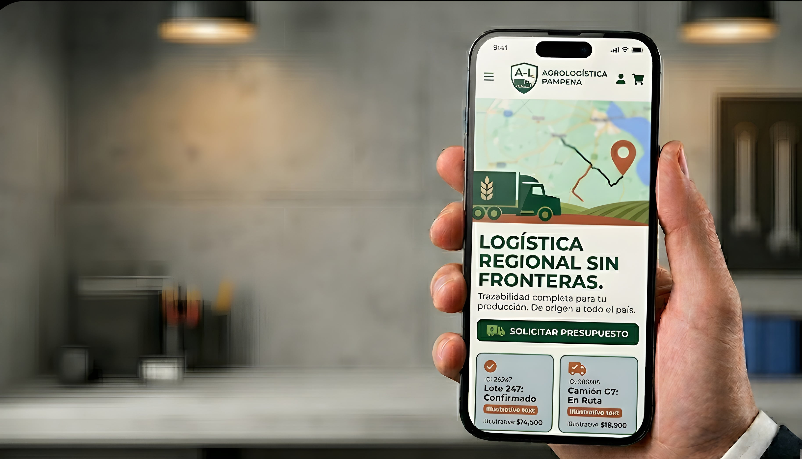
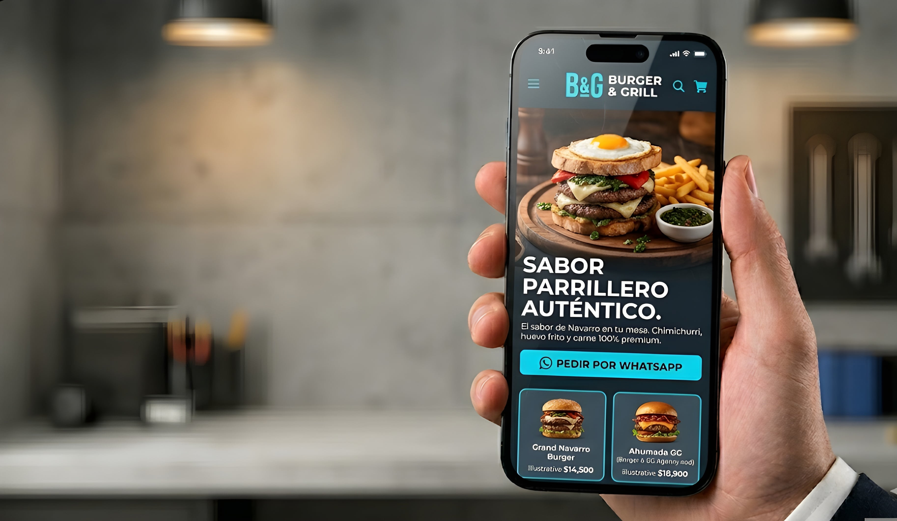

No construimos sitios web. Diseñamos infraestructura digital B2B y sistemas de adquisición para empresas que exigen rentabilidad y escalabilidad operativa.
La mayoría de las agencias entregan presencia digital. Nosotros construimos activos operativos. Cada proyecto nace de una pregunta central: ¿cómo impacta esto en el resultado de negocio?
No hay espacio para lo decorativo en nuestros sistemas. Cada componente tiene un propósito medible, cada flujo está diseñado para reducir fricción, acelerar la decisión de compra y maximizar el valor por sesión.
Evaluar Mi InfraestructuraReducción documentada en tiempos de ciclo operativo en empresas que migran de procesos manuales a infraestructura digital integrada.
En campañas Meta integradas con funnels propios.
Versus páginas de destino genéricas sin optimización de conversión.
Diseño de sistemas que procesan demanda real, integran CRMs, automatizan comunicaciones y reducen la fricción de conversión en cada punto del embudo.
Estrategia, implementación y optimización de campañas Meta con landing pages propietarios, tracking avanzado y automatización post-lead para maximizar el ciclo de ventas.
Transformación del inventario en activos digitales de generación de demanda: catálogos filtrables, cotizaciones en línea y flujos de pedido sin intervención manual.
Proyectos documentados. Resultados medibles. Sistemas que siguen operando.
Sistema Operativo de Logística Agropecuaria
AgroLogística Pampeana operaba con un sistema fragmentado: órdenes de trabajo en papel, comunicaciones por WhatsApp no estructurado y sin visibilidad en tiempo real del estado de sus despachos. Los coordinadores perdían entre 3 y 4 horas diarias reconciliando información dispersa.
Desarrollamos una plataforma web centralizada con panel de control operativo, módulo de tracking GPS integrado con los transportistas, y sistema de alertas automáticas por umbral de tiempo. La comunicación pasó de fragmentada a completamente trazable dentro del mismo sistema.
El resultado fue una eliminación casi total de las consultas de estado por fuera del sistema y una reducción del 60% en el tiempo de coordinación por envío. Los clientes B2B de AgroLogística acceden hoy a un portal propio con visibilidad de sus cargas en tiempo real, lo que redujo significativamente la fricción post-venta.

E-Catálogo Dinámico de Alta Gama
Apex Motos disponía de un inventario de alto valor pero una presencia digital que no reflejaba la calidad de su producto ni generaba leads calificados. Las consultas llegaban de forma desordenada por redes sociales, sin datos de intención ni filtrado por capacidad de compra.
Construimos un catálogo digital dinámico con filtros por marca, cilindrada, uso y rango de precio. Cada ficha de producto incluye especificaciones técnicas completas, galería optimizada y un flujo de consulta que captura nombre, contacto e intención antes de habilitar el canal directo con el asesor.
El sistema se integró con un CRM liviano que permite al equipo de ventas ver en tiempo real el historial de navegación del lead antes de la primera llamada. La tasa de cierre mejoró significativamente al trabajar con prospectos pre-calificados por el sistema en lugar de contactos en frío.
Funnel de Conversión Gastronómica + Meta Ads
Burger & Grill invertía en pauta digital sin estructura de conversión propia: los anuncios conducían a una bio de Instagram. Sin pixel, sin tracking de eventos, sin datos post-clic. El gasto no tenía medición y el canal de pedidos dependía completamente de WhatsApp manual.
Diseñamos e implementamos un funnel de conversión gastronómica completo: landing page de alta conversión con menú visual, oferta de captación y formulario de pedido anticipado. Se implementó el Pixel de Meta con eventos personalizados para cada acción relevante (visualización de menú, inicio de pedido, confirmación).
Las campañas de Meta Ads se estructuraron sobre audiencias lookalike derivadas del pixel propio. El flujo de pedidos se automatizó con confirmación por mensaje instantáneo y notificación interna, eliminando el procesamiento manual durante picos de demanda del fin de semana.

Diagnóstico completo del estado actual: canales, métricas, procesos operativos, puntos de fuga y oportunidades de optimización. Sin esto, no hay propuesta.
Diseño técnico del sistema: stack, integraciones, flujos de datos y KPIs de éxito definidos antes de escribir una sola línea de código.
Desarrollo iterativo con entregas parciales validadas. Testing funcional, optimización de performance y documentación técnica completa del sistema.
Activación con monitoreo en tiempo real, ajuste de campañas en las primeras 72 horas y revisión de métricas en semana 2, 4 y 8 post-lanzamiento.
La auditoría es sin costo y sin compromiso. En 45 minutos identificamos los tres puntos de mayor impacto en su operación digital y le presentamos un plan de acción concreto.